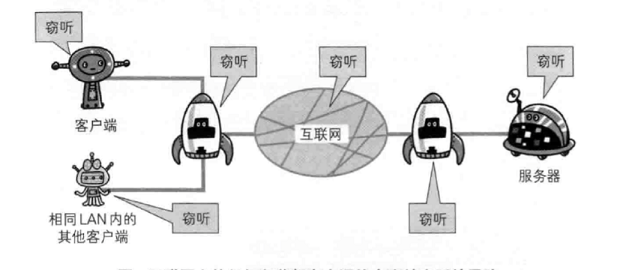
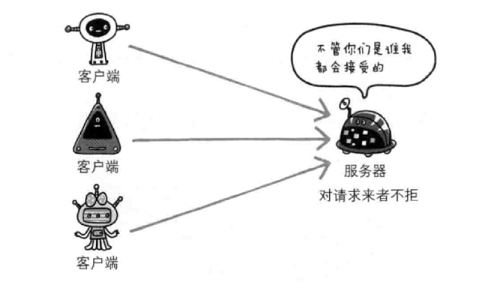
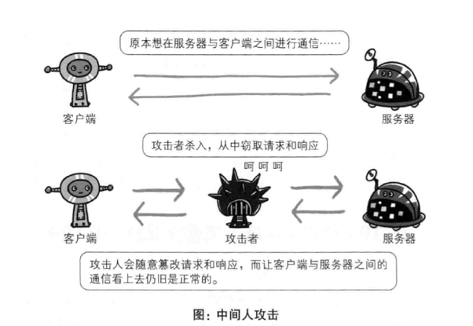

Introduction
基础篇
TCP\/IP
URI和URL
HTTP协议
HTTP报文
状态码
WEB服务器
HTTP首部
请求首部字段
响应首部字段
缓存相关的首部字段
持久连接
进阶篇
HTTP 2.0
HTTPS
HTTP 缺点
https 通信步骤
身份认证
WEB攻击
CSRF
浏览器缓存
强缓存
Expires
cache-control:max-age
协商缓存
Last-Modified,If-Modified-Since
ETag, If-None-Match
Cache-Control
实战篇
CORS
编码
Cookie
使用Fiddler
Published with GitBook
HTTP 缺点
HTTP 缺点
1.通信使用明文(不加密),内容可能被窃听.(抓包工具可以获取请求和响应内容)

2.不验证通讯方的身份,可能遭遇伪装.(任何人都能发送请求,不管对方是谁都会返回响应).

3.无法证明报文的完整性,可能会遭篡改.(没有办法确认发出的请求/响应和接收到的请求/响应前后一致)

results matching "
"
No results matching "
"